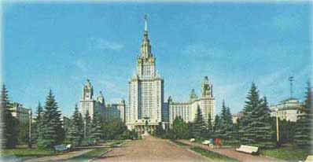
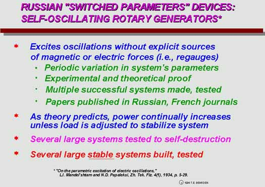

|

E.g., see L Mandelstam. [L.I. Mendel'shtam], N. Papalexi, A. Andronov, S. Chaikin and A. Witt, "Report on Recent Research on Nonlinear Oscillations," Translation of "Expose Des Recherches Recentes Sur Les Oscillations Non Lineaires," Technical Physics of the USSR, Leningrad, Vol. 2, 1935, p. 81-134. NASA Translation Doc. TTF-12,678, Nov. 1969. In the 1930s Russian scientists at the University of Moscow and supporting agencies developed and tested parametric oscillator generators exhibiting COP > 1.0. The theory, results, pictures, etc. are in both the Russian and French literature, with many references cited in this particular translation. Apparently the work was never resurrected after WW II.

Other
pertinent references are Mandelstam, L.I.; and N.D. Papaleksi.,
"On the parametric excitation of electric
oscillations," Zhurnal Teknicheskoy Fiziki, 4(1), 1934, p.
5-29; Mandelstam, L. and N. Papalexi, "On resonance
phenomena with frequency distribution," Z.f. Phys., No. 72,
1931, p. 223; — "Concerning asynchronous excitation of
oscillations," Zhurnal Tekhnicheskoi Fiziki, 4(1), 1934, p.
TBD; — "Concerning asynchronous excitation of
oscillations," Zhurnal Tekhnicheskoi Fiziki, 4(1), 1934; —
"Concerning nonstationary processes occurring in the case of
resonance phenomena of the second class," Zhurnal
Tekhnicheskoi Fiziki, 4(1), 1934.
See also A. Andronov, “The limiting cycles of Poincare
and the theory of self-maintained oscillations,” Comptes-Rendus,
Vol. 189, 1929, p. 559. See
also A. Andronov and A. Witt, , “On the mathematical theory of
self-excitations,” Comptes-Rendus, Vol. 190, 1930, p. 256; —
“On the mathematical theory of self-excitation systems with two
degrees of freedom,” Zhurnal Tekhnicheskioi Fiziki, 4(1), 1934;
— “Discontinuous periodic movements and theory of
multivibrators of Abraham and Bloch,” Bull. De l’Acad. Ed Sc.
De l”URSS, vol. 189, 1930.
See also S. Chaikin, “Continuous and ‘discontinuous’
oscillations,” Zhurnal Prikladnoi Fiziki, Vol. 7, 1930, p. 6;
— and A. Witt, , “Drift in a case of small amplitudes,”
Zhurnal Teknicheskoi Fiziki, 1(5), 1931, p. 428; — and N.
Kaidanowski, “Mechanical relaxation oscillations,” Zhurnal
Teknicheskoi Fiziki, Vol. 3, 1933, p. 1. Excerpted from "On Extracting Electromagnetic Energy from the Vacuum," IC-2000, by Tom Bearden. |